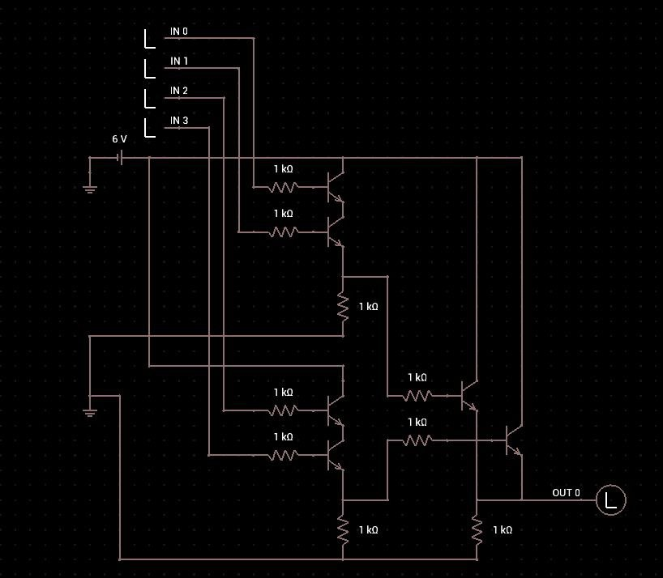
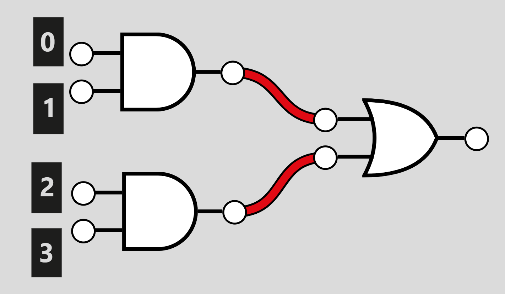

Low Logic
Created: July 31, 2025 9:42 AM Difficulty: Very Easy Category:
hardware
Analyzing the challenge Docs we get circuit diagram and a csv with
what it looks is the input of the circuit.

Here we have transistors and resistances, if we look closely we can
discover that this exactly assembly of resistances and transistors let
us make logic gates in this case we get one or gate and two
and gates which makes the following logic diagram

Then to solve this challenge we need to write a script (in this case
written on python) to model the gates flow by getting the inputs located
on the csv , so the script could look like this
def open_file(url: str) -> list[str]:
with open(url) as f:
buffer = f.read()
return buffer.split('\n')[1:-1]
def operations(entry: str) -> None:
bits: int = [int(i) for i in entry.split(',')]
return (bits[0] and bits[1]) or (bits[2] and bits[3])
if __name__ == "__main__":
bits = [operations(i) for i in open_file('input.csv')]
bit_string = ''.join(str(b) for b in bits)
chars = ''.join([chr(int(bit_string[i:i+8], 2)) for i in range(0, len(bit_string), 8)])
print(chars)
This simple script in the open_file function opens the
csv file saves the input on a list by splitting it by test cases (here
we use the \n char) and removing the first and the last
item. In other hand, operations get the entry by each test
case and operate each bit. Lastly, the code just convert from bytes to
string, revealing our flag.
Home